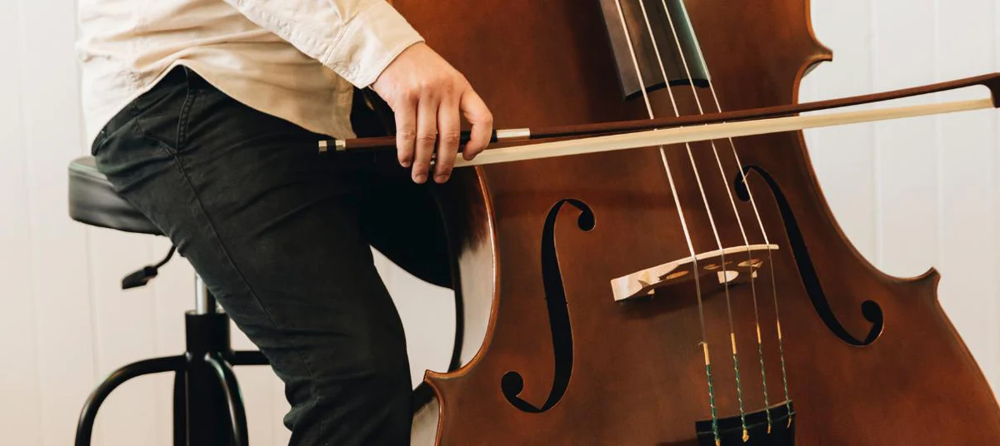

The Double Bass
 The double bass is the largest string intrument in the orchestra. It has warm, deep tones that
support harmonies. When played in the orchestra, it creates rhythms and adds a rich tone to the music.
The double bass can be used for many different genres, such as jazz, folk, and classical music.
The double bass can be played using a bow, plucking strings, and slapping the strings.
The double bass is the largest string intrument in the orchestra. It has warm, deep tones that
support harmonies. When played in the orchestra, it creates rhythms and adds a rich tone to the music.
The double bass can be used for many different genres, such as jazz, folk, and classical music.
The double bass can be played using a bow, plucking strings, and slapping the strings.
Length of Bass: Around 70 inches
Type of sound it makes: Deep and rich low-pitched sounds
Average cost: $1500 to $10000+

Click to go back to the homepage!